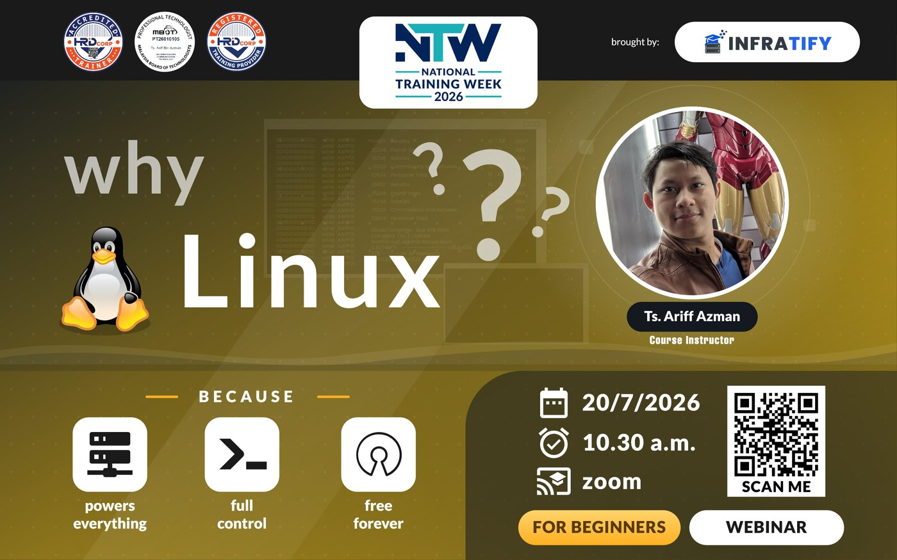
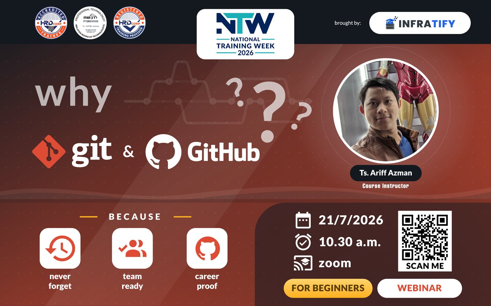
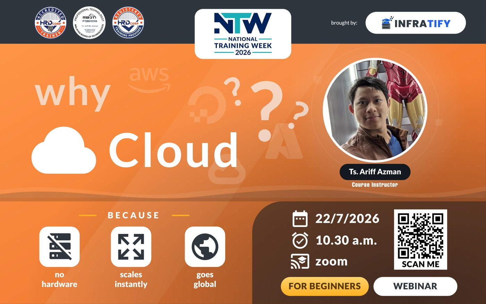
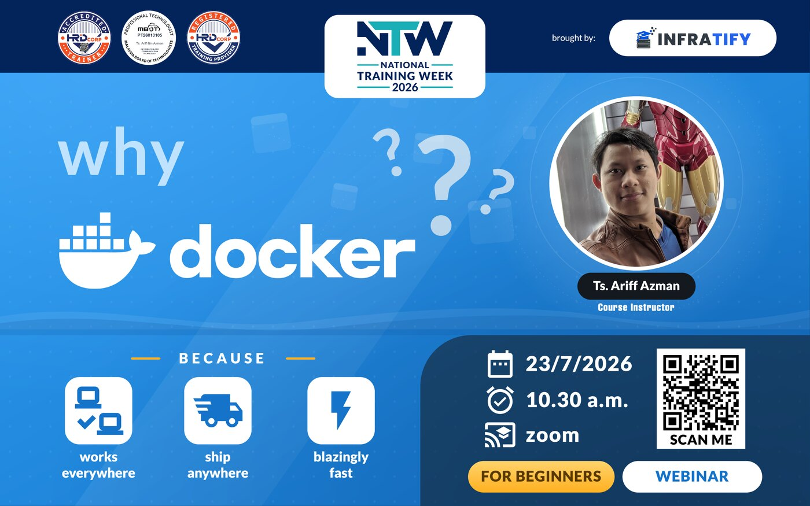
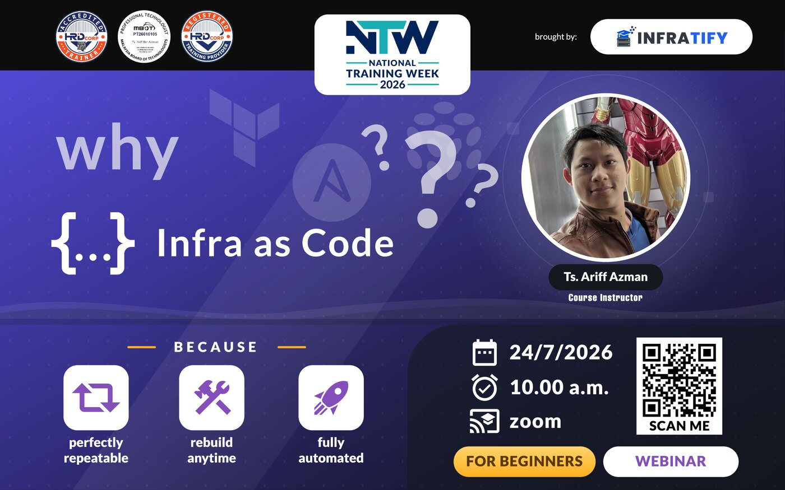

20Mon Jul
Five free sharing sessions for beginners, one topic each morning. You watch along on Zoom, and there is nothing for you to set up.
brought by INFRATIFY
Each one is a short walk-through of a single topic: enough to see how it works and where to start. It is an introduction, not a full course.




